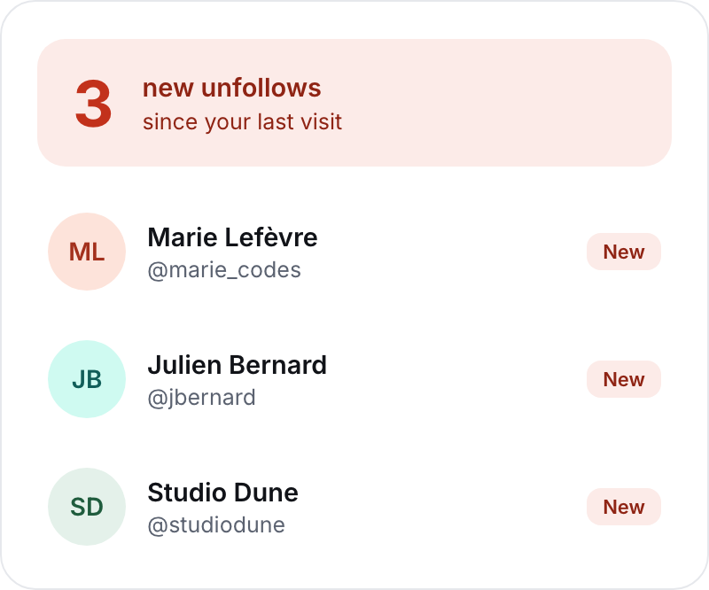
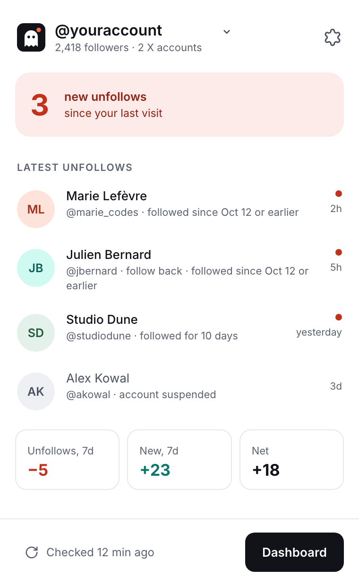
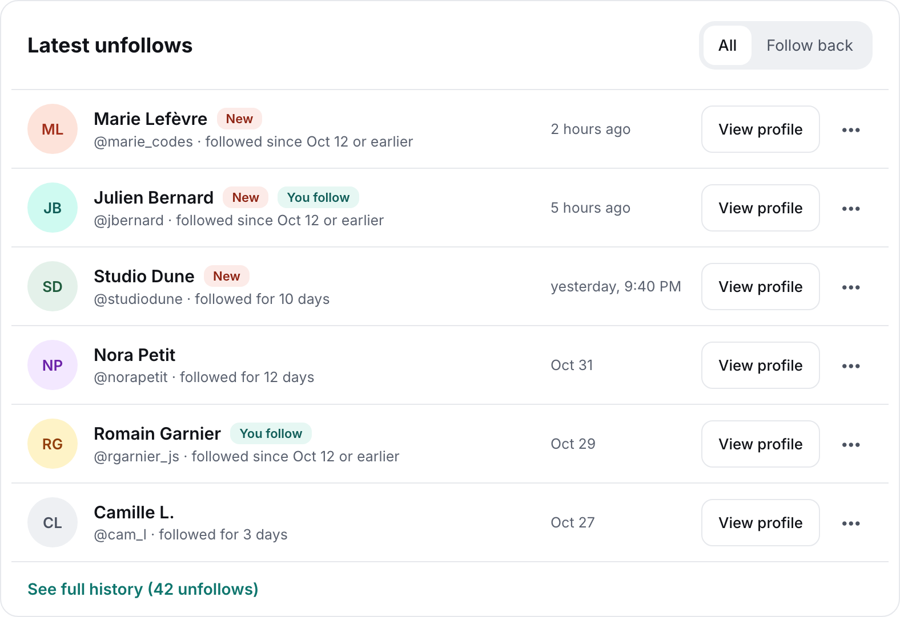
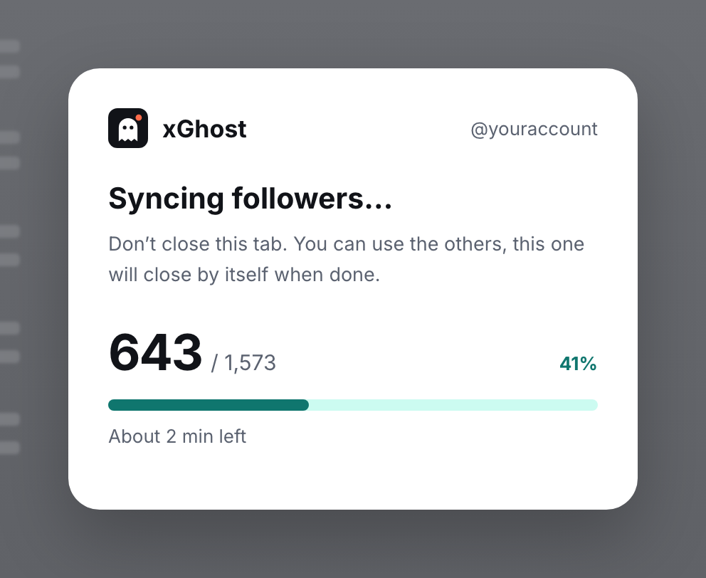

1
Initial scan
Once installed, xGhost fetches your follower list. That's the baseline*.
Chrome extension · open source
Free Chrome extension, no sign-up, no tracking.

How it works
Once installed, xGhost fetches your follower list. That's the baseline*.
Every 6, 12 or 24 hours, as you choose, it checks who joined and who left.
As soon as someone leaves, the icon lets you know.
xGhost can't see the past: it counts unfollows and new followers from the moment it's installed. Unfollows that happened before will never show up.
Preview

Your latest unfollows, one click on the icon away.

All your unfollows and new followers, in one place.

In an x.com tab that closes by itself.
Install
Available on the Chrome Web Store, for Chrome, Brave, Edge and other Chromium-based browsers, on desktop.
Add to ChromeWith the "Add to Chrome" button, right here on the left.
Then confirm with "Add extension" in the Chrome window.
Click the puzzle piece in the Chrome toolbar, then the pin next to xGhost.
The xGhost welcome page opens: start a new sync or import your backup.
Updates
Like every extension on the Chrome Web Store, xGhost updates automatically.
Chrome installs every new version by itself, in the background.
Your history, accounts and settings are kept from one version to the next.
For peace of mind, export a .json backup from the xGhost settings.
Privacy
No API, no third-party server: xGhost reads what x.com displays, with your own session. Nothing is sent anywhere but X.
No analytics, no third-party cookies, no telemetry.
No xGhost account to create. Install it, that's it.
Your data stays on your computer. Export it to a file to get it back after reinstalling.
FAQ
X only shows your follower list on its own page. So xGhost opens a pinned tab, scrolls through the list, then closes it. Don't close it during the scan.
xGhost just scrolls through your follower list, like you would yourself, and respects the pauses X imposes. The risk is low, but no unofficial extension can guarantee it's zero.
No. X keeps no history of who followed you and then left. xGhost starts from your follower list at the initial scan: stats only begin from there, there's no going back in time.
X counts accounts it doesn't show (suspended, restricted) in your total. From 99%, the scan counts as complete.
X never says how long someone has been following you. xGhost only knows what it has seen: the date of your first scan, or the date a new follower arrived.
Yes. Log in to another account on x.com, xGhost detects it and tracks it separately.
xGhost supports accounts with up to 15,000 followers. Beyond that, syncing would take too long and could hit X's limits, so it isn't started. An account already being tracked can grow up to 20,000 followers; past that, checks stop and your history stays available.
No, only Chrome and Chromium-based browsers, on desktop.